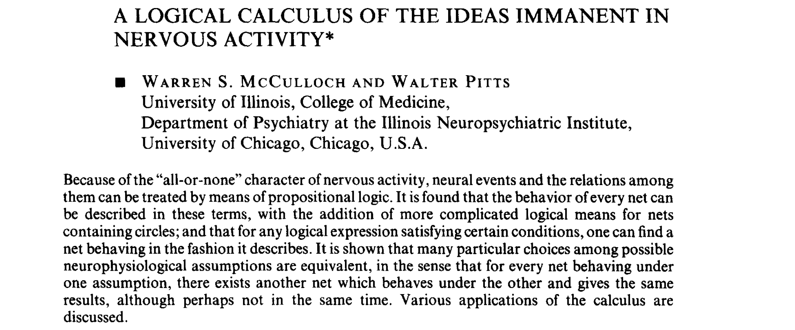
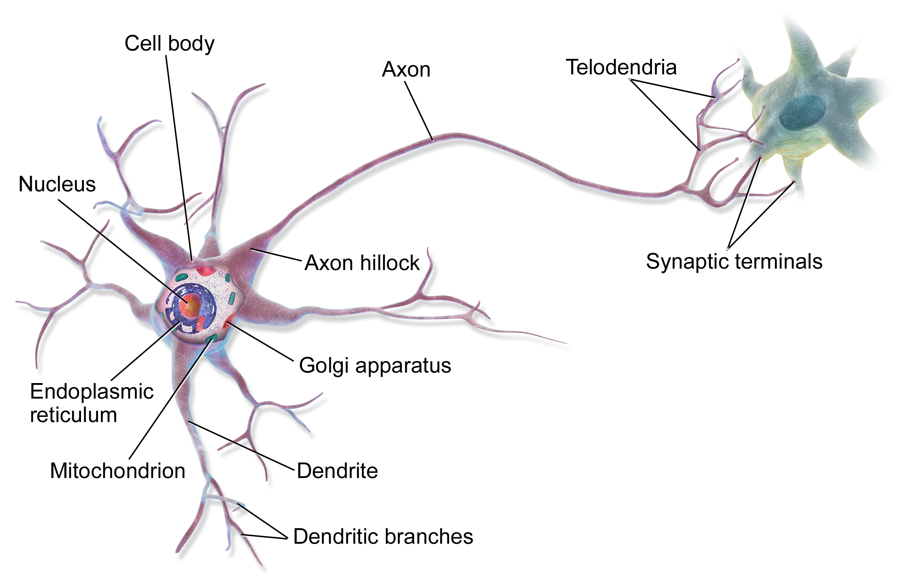
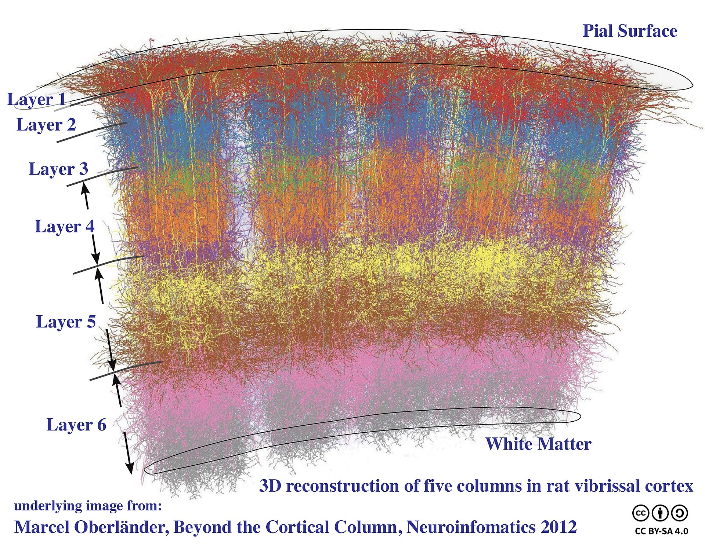
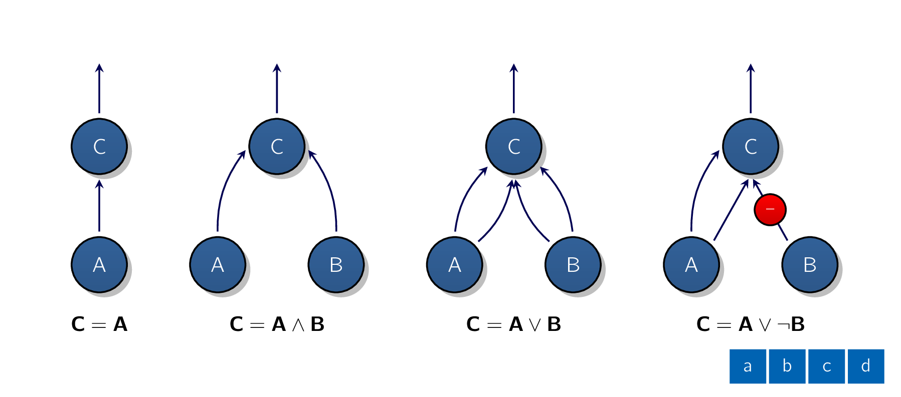
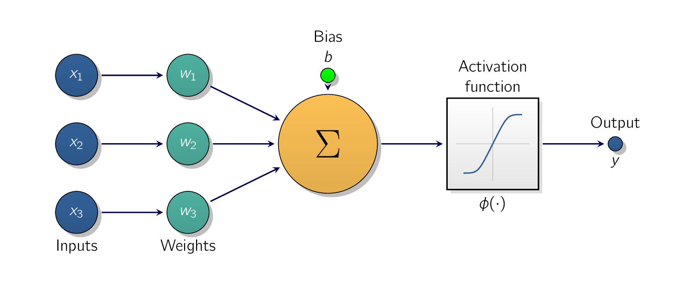
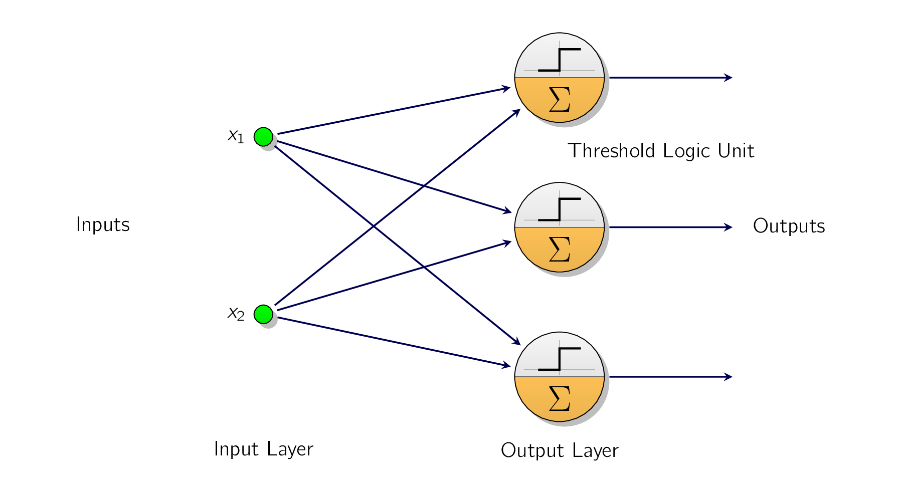
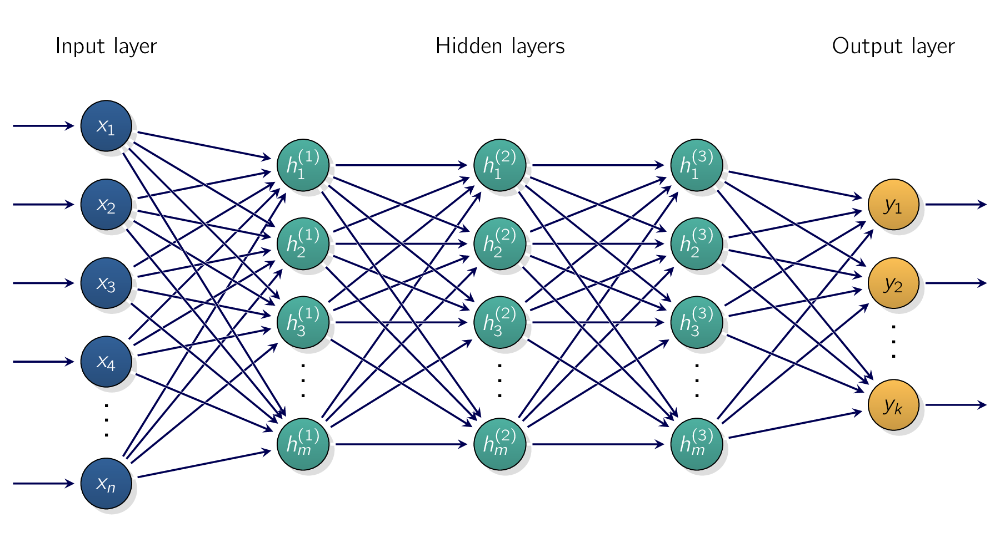
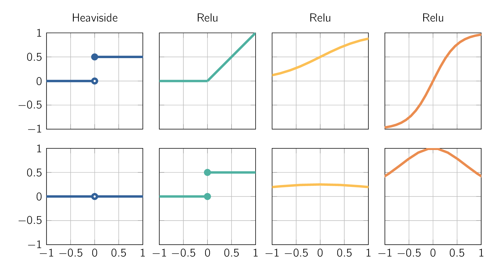

While it may seem ANNArtificial Neural NetworksArtificial Neural Networkss are the cutting edge in MLMachine LearningMachine Learning, They have been around for quite a while: they were first introduced back in 1943 by the neurophysiologist Warren McCulloch [5] Warren Sturgis McCulloch (1898 - 1969) was an American neurophysiologist and cybernetician known for his work on the foundation for certain brain theories and his contribution to the cybernetics movement. Along with Walter Pitts, McCulloch created computational models based on mathematical algorithms called threshold logic which split the inquiry into two distinct approaches, one approach focused on biological processes in the brain and the other focused on the application of neural networks to artificial intelligence [†-1] McCulloch, W. S. & Pitts, W. A logical calculus of the ideas immanent in nervous activity. The bulletin of mathematical biophysics 5, 115–133 (1943). and the mathematician Walter Pitts. In their landmark paper A Logical Calculus of Ideas Immanent in Nervous Activity, They presented a simplified computational model of how biological neurons might work together in animal brains to perform complex computations using propositional logic.
This was the first ANNArtificial Neural NetworksArtificial Neural Networks architecture [†-1] McCulloch, W. S. & Pitts, W. A logical calculus of the ideas immanent in nervous activity. The bulletin of mathematical biophysics 5, 115–133 (1943).
Since then, many other architectures have been invented. The early successes of ANNArtificial Neural NetworksArtificial Neural Networkss led to the widespread belief that we would soon be conversing with truly intelligent machines. When it became clear in the 1960s that this promise would go unfulfilled, [6] at least for quite a while. funding was diverted elsewhere, and ANNArtificial Neural NetworksArtificial Neural Networkss entered a long winter. This is also known as the AI winter [†-2] Howe, J. Artificial intelligence at edinburgh university: A perspective. Archived from the original on 17 (2007). In the early 1980s, new architectures were invented and better training techniques were developed, sparking a revival of interest in connectionism, the study of ANNArtificial Neural NetworksArtificial Neural Networkss. But progress was slow, and by the 1990s other powerful MLMachine LearningMachine Learning techniques had been invented, such as SVMSupport Vector MachinesSupport Vector Machines. These techniques seemed to offer better results and stronger theoretical foundations than ANNArtificial Neural NetworksArtificial Neural Networkss, so once again the study of ANNArtificial Neural NetworksArtificial Neural Networkss was put on hold and this is known as the AI winter.
Well, here are a few good reasons to believe that this time is different and that the renewed interest in ANNArtificial Neural NetworksArtificial Neural Networkss will have a much more profound impact on our lives: There is now a huge quantity of data available to train ANNArtificial Neural NetworksArtificial Neural Networkss, and ANNArtificial Neural NetworksArtificial Neural Networkss frequently outperform other MLMachine LearningMachine Learning techniques on very large and complex problems. One of the major turning points of ANNArtificial Neural NetworksArtificial Neural Networks was the fundamental question of:
The tremendous increase in computing power since the 1990s now makes it possible to train large ANNArtificial Neural NetworksArtificial Neural Networkss in a reasonable amount of time. This is in part due to Moore’s law, [7] The observation that the number of transistors in an ICIntegrated CircuitA small electronic device combining numerous interconnected components, like transistors, resistors, and capacitors, onto a single semiconductor chip, usually silicon doubles about every two years. Moore’s law is an observation and projection of a historical trend. Rather than a law of physics, it is an empirical relationship. but also thanks to the gaming industry, which has stimulated the production of powerful GPU cards by the millions which have become the norm to train MLMachine LearningMachine Learning instead of CPUs. In addition to previous statements, cloud platforms have made this power accessible to everyone. The training algorithms have been improved. From a realistic standpoint, they are only slightly different from the ones used in the 1990s, but these relatively small tweaks have had a huge positive impact.
Some theoretical limitations of ANNArtificial Neural NetworksArtificial Neural Networkss have turned out to be benign in practice. For example, many people thought that ANNArtificial Neural NetworksArtificial Neural Networks training algorithms were doomed because they were likely to get stuck in local optima [†-3] Goodfellow, I. J., Vinyals, O. & Saxe, A. M. Qualitatively characterizing neural network optimization problems. arXiv preprint arXiv:1412.6544 (2014), but it turns out that this is NOT a big problem in practice, especially for larger ANNArtificial Neural NetworksArtificial Neural Networkss:
The local optima often perform almost as well as the global optimum.
ANNArtificial Neural NetworksArtificial Neural Networkss seem to have entered a virtuous circle of funding and progress. Amazing products based on ANNArtificial Neural NetworksArtificial Neural Networkss regularly make the headline news, which pulls more and more attention and funding toward them, resulting in more and more progress and even more amazing products.
-
There is now a huge quantity of data available to train neural networks, and ANNArtificial Neural NetworksArtificial Neural Networkss frequently outperform other MLMachine LearningMachine Learning techniques on very large and complex problems.
-
The tremendous increase in computing power since the 1990s now makes it possible to train large neural networks in a reasonable amount of time. This is in part due to Moores law, [8] the number of components in integrated circuits has doubled about every 2 years over the last 50 years. but also thanks to the gaming industry, which has stimulated the production of powerful graphical processing units (GPUs) by the millions:
GPU cards were initially designed to accelerate graphics, but it turns out that neural networks perform similar computations (such as large matrix multiplications), so they can also be accelerated using GPUs.Moreover, cloud platforms have made this power accessible to everyone.
-
The training algorithms have been improved. To be fair they are only slightly different from the ones used in the 1990s, but these relatively small tweaks have had a huge positive impact.
-
Some theoretical limitations of ANNs have turned out to be benign in practice. For example, many people thought that ANN training algorithms were doomed because they were likely to get stuck in local optima, but it turns out that this is not a big problem in practice, especially for larger neural networks: the local optima often perform almost as well as the global optimum.
-
The invention of the Transformer architecture in 2017 (see Chapter 15) has been a game changer: it can process and generate all sorts of data (e.g., text, images, audio) unlike earlier, more specialized, architectures, and it performs great across a wide variety of tasks from robotics to protein folding. Moreover, it scales rather well, which has made it possible to train very large foundation models that can be reused across many different tasks, possibly with a bit of fine-tuning (thats transfer learning), or just by prompting the model in the right way (thats in-context learning, or ICL). For instance, you can give it a few examples of the task at hand (thats few-shot learning, or FSL), or ask it to reason step-by-step (thats chain-of-thought prompting, or CoT). Its a new world!
-
ANNs seem to have entered a virtuous circle of funding and progress. Amazing products based on ANNs regularly make the headline news, which pulls more and more attention and funding toward them, resulting in more and more progress and even more amazing products. AI is no longer just powering products in the shadows: since chatbots such as ChatGPT were released, the general public is now directly interacting daily with AI assistants, and the big tech companies are competing fiercely to grab this gigantic market: the pace of innovation is wild.

Before we discuss artificial neurons, let’s take a quick look at its biological counterpart. It is an unusual-looking cell mostly found in animal brains which we can see in Fig. 1.4.
It’s composed of a cell body containing the nucleus and most of the cell’s complex components, many branching extensions called dendrites, plus one very long extension called the axon. The axon’s length may be just a few times longer than the cell body, or up to tens of thousands of times longer.
Near its extremity the axon splits off into many branches called telodendria, and at the tip of these branches are minuscule structures called synaptic terminals, [9] or simply synapses. which are connected to the dendrites or cell bodies of other neurons. Biological neurons produce short electrical impulses called action potentials, which travel along the axons and make the synapses release chemical signals called neurotransmitters. When a neuron receives a sufficient amount of these neurotransmitters within a few , it fires its own electrical impulses. [10] Actually, it depends on the neurotransmitters, as some of them inhibit the neuron from firing.
Therefore, individual biological neurons seem to behave in a simple way, but they’re organised in a vast network of billions, with each neuron typically connected to thousands of other neurons. Highly complex computations can be performed by a network of fairly simple neurons, much like a complex anthill can emerge from the combined efforts of simple ants. The architecture of biological neural networks (BNNs) is the subject of active research, but some parts of the brain have been mapped [†-5] Barrett, D. G., Morcos, A. S. & Macke, J. H. Analyzing biological and artificial neural networks: challenges with opportunities for synergy? Current opinion in neurobiology 55, 55–64 (2019). These efforts show that neurons are often organised in consecutive layers, especially in the cerebral cortex. [11] This is the outer layer of the brain.

McCulloch and Pitts proposed a very simple model of the biological neuron, which later became known as an artificial neuron where it has one or more binary (on/off) inputs and one binary output. The artificial neuron activates its output when more than a certain number of its inputs are active. In their paper, McCulloch and Pitts showed that even with such a simplified model it is possible to build an ANNArtificial Neural NetworksArtificial Neural Networks which can compute any logical proposition you want. To see how such a network works, let’s build a few ANNArtificial Neural NetworksArtificial Neural Networkss which perform various logical computations, assuming a neuron is activated when at least two (2) of its input connections are active which can be seen in Fig. 1.6.

Let’s see what these networks do:
-
The first network on the left is the identity function: if neuron is activated, then neuron gets activated as well; [12] since it receives two input signals from neuron but if neuron is off, then neuron is off as well.
-
The second network performs a logical AND where the neuron C is activated only when both neurons A and B are activated (a single input signal is not enough to activate neuron C).
-
The third network performs a logical OR where neuron C gets activated if either neuron A or neuron B is activated (or both).
-
Finally, if we suppose that an input connection can inhibit the neuron’s activity, [13] which is the case with biological neurons. then the fourth network computes a slightly more complex logical proposition. Here neuron is activated only if neuron is active and neuron B is off. If neuron is active all the time, then we get a logical NOTİn this case, neuron is active when neuron is off, and vice versa.
We can imagine how these networks can be combined to compute complex logical expressions.
The perceptron is one of the simplest ANNArtificial Neural NetworksArtificial Neural
Networks architectures, invented in 1957 by Frank Rosenblatt [14] ¶ [14]Frank Rosenblatt
(1928 - 1971)
was an American psychologist notable in the field of AIArtificial IntelligenceArtificial Intelligence. He is
sometimes called the father of deep learning for his pioneering work on ANNArtificial Neural
NetworksArtificial Neural Networkss. [†-6] Block, H.-D. The perceptron: A model for brain functioning.
i. Reviews of Modern Physics 34, 123 (1962). It is based on a slightly different artificial
neuron called a TLUThreshold Logic UnitThreshold Logic Unit, or sometimes a LTULinear
Threshold UnitLinear Threshold Unit which can be seen in Fig. 1.7. The inputs and output are
numbers, [15]
this is instead of binary on/off values. and each input connection is associated with a
weight.
[14]Frank Rosenblatt
(1928 - 1971)
was an American psychologist notable in the field of AIArtificial IntelligenceArtificial Intelligence. He is
sometimes called the father of deep learning for his pioneering work on ANNArtificial Neural
NetworksArtificial Neural Networkss. [†-6] Block, H.-D. The perceptron: A model for brain functioning.
i. Reviews of Modern Physics 34, 123 (1962). It is based on a slightly different artificial
neuron called a TLUThreshold Logic UnitThreshold Logic Unit, or sometimes a LTULinear
Threshold UnitLinear Threshold Unit which can be seen in Fig. 1.7. The inputs and output are
numbers, [15]
this is instead of binary on/off values. and each input connection is associated with a
weight.
The first thing TLUThreshold Logic UnitThreshold Logic Unit does is to compute a linear function of its inputs:
Then it applies a step function to the result:
For those of you who are observant, this should look familiar as it is similar to logistic regression, [16] A topic which was covered in B.Sc Data Science I. except it uses a step function instead of the logistic function. Similar to logistic regression, the model parameters are the input weights and the bias term .

The most common step function used in perceptrons is the Heaviside step and sometimes the sign function is used instead [†-7] Sharma, S., Sharma, S. & Athaiya, A. Activation functions in neural networks. Towards Data Sci 6, 310–316 (2017).
A single TLUThreshold Logic UnitThreshold Logic Unit can be used for simple linear binary classification:
It is possible, for example, use a single TLUThreshold Logic UnitThreshold Logic Unit to classify iris flowers [17] a famous dataset used by statisticians and MLMachine LearningMachine Learning researchers [†-8] Fisher, R. A. The use of multiple measurements in taxonomic problems. Annals of eugenics 7, 179–188 (1936) based on petal length and width. Training such a TLUThreshold Logic UnitThreshold Logic Unit would require finding the right values for . A perceptron is composed of one or more TLUThreshold Logic UnitThreshold Logic Units organized in a single layer, where every TLUThreshold Logic UnitThreshold Logic Unit is connected to every input. Such a layer is called a fully connected layer, or a dense layer. The inputs constitute the input layer and since the layer of TLUThreshold Logic UnitThreshold Logic Units produces the final outputs, it is called the output layer.

This perceptron can classify instances simultaneously into three (3) different binary classes, which makes it a multilabel classifier. It may also be used for multiclass classification.
Using linear algebra, the following equation can be used to efficiently calculate the outputs of a layer of artificial neurons for several instances at once.
where:
-
is the output matrix and has one row per instance and one column per neuron.
-
is the matrix of input features and has one row per instance and one column per feature.
-
is the weight matrix containing all the connection weights and has one row per input and one column per neuron.
-
is the bias term containing all the bias terms which is one per neuron.
-
is called the activation function. When the artificial neurons are TLUThreshold Logic UnitThreshold Logic Units, it is a step function.
In mathematics, the sum of a matrix and a vector is undefined.
However, in the context of data science, we allow broadcasting. Here, adding a vector to a matrix means adding it to every row in the matrix. So, first multiplies by , which results in a matrix with one row per instance and one column per output, which then adds the vector to every row of that matrix, which adds each bias term to the corresponding output, for every instance.
Moreover, is then applied itemwise to each item in the resulting matrix.
Now the question is:
The original perceptron training algorithm proposed by Rosenblatt was largely inspired by Hebb’s rule [†-9] Sompolinsky, H. The theory of neural networks: The Hebb rule and beyond in Heidelberg Colloquium on Glassy Dynamics: Proceedings of a Colloquium on Spin Glasses, Optimization and Neural Networks Held at the University of Heidelberg June 9–13, 1986 (2006), 485–527. In his 1949 book The Organization of Behaviour, Donald Hebb suggested that when a biological neuron triggers another neuron often, the connection between these two neurons grows stronger [†-10] Hebb, D. O. The organization of behavior: A neuropsychological theory (Psychology press, 2005).
Siegrid Löwel later summarized Hebb’s idea in the catchy phrase,
This means the connection weight between two (2) neurons tends to increase when they fire simultaneously.
This rule later became known as Hebb’s rule [18] The following is an excerpt from primary author of the idea. Let us assume that the persistence or repetition of a reverberatory activity (or "trace") tends to induce lasting cellular changes that add to its stability. …. When an axon of cell A is near enough to excite a cell B and repeatedly or persistently takes part in firing it, some growth process or metabolic change takes place in one or both cells such that A’s efficiency, as one of the cells firing B, is increased. [†-10] Hebb, D. O. The organization of behavior: A neuropsychological theory (Psychology press, 2005) (or Hebbian learning [†-11] Gerstner, W. & Kistler, W. M. Mathematical formulations of Hebbian learning. Biological cybernetics 87, 404–415 (2002))
Perceptrons are trained using a variant of this rule that takes into account the error made by the network when it makes a prediction. The perceptron learning rule reinforces connections that help reduce the error.
More specifically, the perceptron is fed one training instance at a time, and for each instance it makes its predictions. For every output neuron that produced a wrong prediction, it reinforces the connection weights from the inputs that would have contributed to the correct prediction.
where:
-
is the connection weight between the input and the neuron.
-
is the input value of the current training instance.
-
is the output of the output neuron for the current training instance.
-
is the target output of the output neuron for the current training instance.
-
is the learning rate.
The decision boundary of each output neuron is linear, therefore perceptrons are incapable of learning complex patterns. However, if the training instances are linearly separable, Rosenblatt demonstrated that this algorithm would converge to a solution.
This is called the perceptron convergence theorem.
python
For those of you who have taken a Data Science I course by yours truly, you may have noticed that
the perceptron learning algorithm strongly resembles stochastic gradient descent. In fact, sklearn ’s Perceptron class is
equivalent to using an SGDClassifier with the following hyperparameters:
-
loss="perceptron", -
learning_rate="constant", -
eta0=1, the learning rate -
penalty=None, no regularization.
In their 1969 monograph Perceptrons, Marvin Minsky and Seymour Papert highlighted a number of serious weaknesses of perceptrons: in particular, they are incapable of solving some trivial problems (e.g., the exclusive OR (XOR) classification problem).
A simple logic gate problem which is proven to be unsolvable using a single-layer perceptron.
This is true of any other linear classification model, but researchers had expected much more from perceptrons, and some were so disappointed, they dropped neural networks altogether in favour of higher-level problems such as logic, problem solving, and search. The lack of practical applications also didn’t help.
It turns out that some of the limitations of perceptrons can be eliminated by stacking multiple perceptrons. The resulting ANNArtificial Neural NetworksArtificial Neural Networks is called a MLPMulti-layer PerceptronsMulti-layer Perceptrons and a MLPMulti-layer PerceptronsMulti-layer Perceptrons can solve the XOR problem [†-12] Popescu, M.-C. et al. Multilayer perceptron and neural networks. WSEAS Transactions on Circuits and Systems 8, 579–588 (2009).
Perceptrons do NOT output a class probability. This is one reason to prefer logistic regression over perceptrons. Moreover, perceptrons do NOT use any regularization by default, and training stops as soon as there are no more prediction errors on the training set, so the model typically does not generalize as well as logistic regression or a linear SVM classifier. However, perceptrons may train a bit faster.
An MLPMulti-layer PerceptronsMulti-layer Perceptrons is composed of one input layer, one or more layers of TLUThreshold Logic UnitThreshold Logic Units called hidden layers, and one final layer of TLUThreshold Logic UnitThreshold Logic Units called the output layer. The layers close to the input layer are usually called the lower layers, and the ones close to the outputs are usually called the upper layers.
The signal flows only in one direction, [19] From input to output. so this architecture is an example of a FNNFeedforward Neural NetworksFeedforward Neural Networks [†-13] Bebis, G. & Georgiopoulos, M. Feed-forward neural networks. Ieee Potentials 13, 27–31 (1994).
When an ANNArtificial Neural NetworksArtificial Neural Networks contains a deep stack of hidden layers, it is called a DNNDeep Neural NetworksDeep Neural Networks. The field of deep learning studies DNNDeep Neural NetworksDeep Neural Networkss, and more generally it is interested in models containing deep stacks of computations [†-14] Samek, W. et al. Explaining deep neural networks and beyond: A review of methods and applications. Proceedings of the IEEE 109, 247–278 (2021).

For many years researchers struggled to find a way to train MLPMulti-layer PerceptronsMulti-layer Perceptronss, without success. In the early 1960s several researchers discussed of using gradient descent to train ANNArtificial Neural NetworksArtificial Neural Networkss. This requires computing the gradients of the model’s error with regard to the model parameters and at that time, it wasn’t clear at the time how to do this efficiently with such a complex model containing so many parameters. Then, in 1970, a researcher named Seppo Linnainmaa introduced in his master’s thesis a technique to compute all the gradients automatically and efficiently. This algorithm is now called reverse-mode automatic differentiation [†-15] Linnainmaa, S. Algoritmin kumulatiivinen pyöristysvirhe yksittäisten pyöristysvirheiden Taylor-kehitelmänä Available in Finnish at https://people.idsia.ch/~juergen/linnainmaa1970thesis.pdf. Master’s thesis (University of Helsinki, 1970). In just two (2) passes through the network, [20] one forward, one backward. it is able to compute the gradients of the neural network’s error with regard to every single model parameter.
To put it simply:
These gradients can then be used to perform a gradient descent step. Repeating the process of computing the gradients automatically and taking a gradient descent step, the neural network’s error will gradually drop until it eventually reaches a minimum.
This combination of reverse-mode automatic differentiation and gradient descent is now called backpropagation [†-16] Hecht-Nielsen, R. Theory of the backpropagation neural network in Neural networks for perception 65–93 (Elsevier, 1992).
There are various automatic differentiation techniques (i.e., forward and reverse), with each having its own advantages and disadvantages. Reverse-mode autodiff is well suited when the function to differentiate has many variables (e.g., connection weights and biases) and few outputs (e.g., one loss).
Backpropagation can actually be applied to all sorts of computational graphs, not just neural networks: Linnainmaa’s M.Sc thesis was not about neural nets, it was more general. It was several more years before backprop started to be used to train neural networks, but it still wasn’t mainstream.
Then, in 1986, David Rumelhart, Geoffrey Hinton, and Ronald Williams published a groundbreaking paper analyzing how backpropagation allowed neural networks to learn useful internal representations [†-17] Rumelhart, D. E., Hinton, G. E. & Williams, R. J. Learning representations by back-propagating errors. nature 323, 533–536 (1986). Their results were so impressive that backpropagation was quickly popularized in the field.
Today, it is by far the most popular training technique for NNNeural NetworksNeural Networkss.
Let’s run through how backpropagation works again in a bit more detail:
- 1.
- It handles one mini-batch at a time, and goes through the full training set multiple times. Each pass is called an epoch.
- 2.
- Each mini-batch enters the network through the input layer. The algorithm then computes the output of all the neurons in the first hidden layer, for every instance in the mini-batch. The result is passed on to the next layer, its output is computed and passed to the next layer, and so on until we get the output of the last layer, the output layer.
- 3.
- Next, the algorithm measures the network’s output error. This means, it uses a loss function that compares the desired output and the actual output of the network, and returns some measure of the error.
- 4.
- It then computes how much each output bias and each connection to the output layer contributed to the error. This is done analytically by applying the chain rule, which makes this step fast and precise.
- 5.
- The algorithm then measures how much of these error contributions came from each connection in the layer below, again using the chain rule, working backward until it reaches the input layer. As explained earlier, this reverse pass efficiently measures the error gradient across all the connection weights and biases in the network by propagating the error gradient backward through the network.
- 6.
- Finally, the algorithm performs a gradient descent step to tweak all the connection weights in the network, using the error gradients it just computed.
Initialize all the hidden layers’ connection weights randomly, or training will fail.
For example, if we were to initialize all weights and biases to zero, then all neurons in a given layer will be perfectly identical, and therefore backpropagation will affect them in exactly the same way, so they will remain identical.
In other words, despite having hundreds of neurons per layer, our model will act as if it had only one neuron per layer and therefore it won’t act too smart. If we instead randomly initialize the weights, we break the symmetry and allow back-propagation to train a diverse team of neurons.
In short, backpropagation makes predictions for a mini-batch (forward pass), measures the error, then goes through each layer in reverse to measure the error contribution from each parameter (reverse pass), and finally tweaks the connection weights and biases to reduce the error, which is the gradient descent step.
For back-propagation to work properly, Rumelhart and his colleagues made a key change to the MLPMulti-layer PerceptronsMulti-layer Perceptrons’s architecture by replacing the step function with the logistic function:
Which is also called the sigmoid function. This was an important improvement as step function contains only flat segments, so there is no gradient to work with, while the sigmoid function has a well-defined nonzero derivative everywhere. In fact, the backpropagation algorithm works well with many other activation functions, not just the sigmoid function.
Here are two (2) other popular choices:
Hyperbolic tangent function
Similar sigmoid function, is also S-shaped, continuous, and differentiable, but its output value ranges from -1 to 1, instead of 0 to 1 like the sigmoid function.
This bigger range tends to make each layer’s output more or less centered around 0 at the beginning of training, which often helps speed up convergence.
The rectified linear unit function
It is continuous bu NOT differentiable at as the slope changes abruptly, which can make gradient descent bounce around, and its derivative is 0 for . In practice, however, it works very well and has the advantage of being fast to compute, so it has become the default.
Importantly, the fact that it does NOT have a maximum output value helps reduce some issues during gradient descent.
With all these information you might wonder:
Chaining several linear transformations, gives you only linear transformation.
As this example shows, we don’t have some nonlinearity between layers, then even a deep stack of layers is equivalent to a single layer, and we can’t solve very complex problems with that.
A large DNNDeep Neural NetworksDeep Neural Networks with non-linear activations can theoretically approximate any continuous function.

First, MLPMulti-layer PerceptronsMulti-layer Perceptronss can be used for regression tasks. If we want to predict a single value, [21] e.g., the price of a house, given many of its features. we just need a single output neuron, where its output is the predicted value.
For multivariate regression, [22] i.e., to predict multiple values at once. we need one output neuron per output dimension.
width and the height of the object. So, in the end you end up with four
(4) output neurons. sklearn includes an MLPRegressor class, so let’s use it to build an MLPMulti-layer PerceptronsMulti-layer Perceptrons with
three (3) hidden layers composed of 50 neurons each, and train it on the California housing
dataset.
For simplicity, we will use sklearn ’s fetch_california_housing() function to load the data instead of downloading from a sketchy
website.
python
The following code starts by fetching and splitting the dataset, then it creates a pipeline to standardize
the input features before sending them to the MLPRegressor .
This is very important for ANNArtificial Neural NetworksArtificial Neural Networks as they are trained using gradient descent, and gradient descent does NOT converge very well when the features have very different scales.
Finally, the code trains the model and evaluates its validation error. The model uses the
ReLU activation function in the hidden layers, and it uses a variant of gradient descent
called Adam [23]
An optimization algorithm which improves upon gradient descent by using
adaptive learning rates for each parameter, combining the benefits of momentum and
RMSprop [†-22] Kingma, D. P. & Ba, J. Adam: A method for stochastic optimization. arXiv
preprint arXiv:1412.6980 (2014). It calculates both the first moment, mean of gradients, and
the second moment, uncentered variance of gradients, to adapt the learning rate during
training. This makes it computationally efficient, suitable for large datasets, and effective for
non-stationary or sparse problems. to minimize the mean squared error, with a little bit of
regularisation: [24]
We can control its strength via the alpha hyperparameter, which defaults to 0.0001
.
We get a validation
of about 0.505 , which is comparable to what we would get with a random forest classifier.
This MLPMulti-layer PerceptronsMulti-layer Perceptrons does NOT use any activation function for the output layer, so it’s free to output any value it wants.
This is generally fine, but if we want to guarantee the output will always be positive, then we should use the ReLU activation function in the output layer, or the softplus activation function, which is a smooth variant of ReLU.
The softplus function is
It is a smooth approximation (in fact, an analytic function) to the ramp function, which is known as the rectifier or ReLU (rectified linear unit) in MLMachine LearningMachine Learning. For large negative it is
whereas for large positive it is
which is just above .
Finally, if you want to guarantee that the predictions will always fall within a given range of values, then you should use the sigmoid function or the hyperbolic tangent, and scale the targets to the appropriate range: 0 to 1 for sigmoid and -1 to 1 for tanh.
Sadly, the MLPRegressor class does not support activation functions in the output layer.
Building and training a standard MLPMulti-layer PerceptronsMulti-layer Perceptrons with sklearn is very
convenient, but features are limited. This is why we will switch to Keras in the second part of this
chapter.
The MLPRegressor class uses the MSEMean Square ErrorMean Square Error, which is usually what we want for
regression, but if we have a lot of outliers in the training set, we may prefer to use the MAEMean
Absolute ErrorMean Absolute Error instead. Alternatively, we may want to use the Huber loss,
which is a combination of both. It is quadratic when the error is smaller than a threshold
(typically 1) but linear when
the error is larger than .
The linear part makes it less sensitive to outliers than the mean squared error, and the quadratic part
allows it to converge faster and be more precise than the mean absolute error. However, MLPRegressor only supports
the MSEMean Square ErrorMean Square Error.
MLPMulti-layer PerceptronsMulti-layer Perceptronss can also be used for classification tasks. For a binary classification problem, we just need a single output neuron using the sigmoid activation function:
The estimated probability of the negative class is equal to one minus that number.
MLPMulti-layer PerceptronsMulti-layer Perceptronss can also easily handle multi-label binary classification tasks.
Here, we would need two (2) output neurons, both using the sigmoid activation function where:
-
the first would output the probability that the email is spam, and
-
the second would output the probability that it is urgent.
More generally, we would dedicate one output neuron for each positive class.
Note the output probabilities do NOT necessarily add up to 1.
This lets the model output any combination of labels where we can have nonurgent ham, urgent ham, nonurgent spam, and perhaps even urgent spam. [25] However, this would probably be an error.
If each instance can belong only to a single class, out of three or more possible classes, [26] e.g., classes 0 through 9 for digit image classification. then we need to have one output neuron per class, and we should use the softmax activation function for the whole output layer. The softmax function will ensure all the estimated probabilities are between 0 and 1 and that they add up to 1, given the classes are exclusive. [27] This is called multiclass classification [†-23] Dietterich, T. G. & Bakiri, G. Solving multiclass learning problems via error-correcting output codes. Journal of artificial intelligence research 2, 263–286 (1994).
Regarding the loss function, as we are predicting probability distributions, the cross-entropy loss [28] in literature this is also known as or x-entropy or log loss for short. is generally a good choice.
sklearn has an MLPClassifier class in the sklearn.neural_network package. It is almost identical to the MLPRegressor class, except that it minimises the cross
entropy rather than the MSEMean Square ErrorMean Square Error.
-
¶
- MAEMean Absolute Error
Mean Absolute Error
-
¶
- MSEMean Square Error
Mean Square Error
-
¶
- NNNeural Networks
Neural Networks
-
¶
- DNNDeep Neural Networks
Deep Neural Networks
-
¶
- FNNFeedforward Neural Networks
Feedforward Neural Networks
-
¶
- MLPMulti-layer Perceptrons
Multi-layer Perceptrons
-
¶
- LTULinear Threshold Unit
Linear Threshold Unit
-
¶
- TLUThreshold Logic Unit
Threshold Logic Unit
-
¶
- AIArtificial Intelligence
Artificial Intelligence
-
¶
- ICIntegrated Circuit
A small electronic device combining numerous interconnected components, like transistors, resistors, and capacitors, onto a single semiconductor chip, usually silicon
-
¶
- SVMSupport Vector Machines
Support Vector Machines
-
¶
- MLMachine Learning
Machine Learning
-
¶
- ANNArtificial Neural Networks
Artificial Neural Networks
- 1.
- McCulloch, W. S. & Pitts, W. A logical calculus of the ideas immanent in nervous activity. The bulletin of mathematical biophysics 5, 115–133 (1943)
- 2.
- Howe, J. Artificial intelligence at edinburgh university: A perspective. Archived from the original on 17 (2007)
- 3.
- Goodfellow, I. J., Vinyals, O. & Saxe, A. M. Qualitatively characterizing neural network optimization problems. arXiv preprint arXiv:1412.6544 (2014)
- 4.
- Sebé-Pedrós, A. Stepwise emergence of the neuronal gene expression program in early animal evolution (2023)
- 5.
- Barrett, D. G., Morcos, A. S. & Macke, J. H. Analyzing biological and artificial neural networks: challenges with opportunities for synergy? Current opinion in neurobiology 55, 55–64 (2019)
- 6.
- Block, H.-D. The perceptron: A model for brain functioning. i. Reviews of Modern Physics 34, 123 (1962)
- 7.
- Sharma, S., Sharma, S. & Athaiya, A. Activation functions in neural networks. Towards Data Sci 6, 310–316 (2017)
- 8.
- Fisher, R. A. The use of multiple measurements in taxonomic problems. Annals of eugenics 7, 179–188 (1936)
- 9.
- Sompolinsky, H. The theory of neural networks: The Hebb rule and beyond in Heidelberg Colloquium on Glassy Dynamics: Proceedings of a Colloquium on Spin Glasses, Optimization and Neural Networks Held at the University of Heidelberg June 9–13, 1986 (2006), 485–527
- 10.
- Hebb, D. O. The organization of behavior: A neuropsychological theory (Psychology press, 2005)
- 11.
- Gerstner, W. & Kistler, W. M. Mathematical formulations of Hebbian learning. Biological cybernetics 87, 404–415 (2002)
- 12.
- Popescu, M.-C. et al. Multilayer perceptron and neural networks. WSEAS Transactions on Circuits and Systems 8, 579–588 (2009)
- 13.
- Bebis, G. & Georgiopoulos, M. Feed-forward neural networks. Ieee Potentials 13, 27–31 (1994)
- 14.
- Samek, W. et al. Explaining deep neural networks and beyond: A review of methods and applications. Proceedings of the IEEE 109, 247–278 (2021)
- 15.
- Linnainmaa, S. Algoritmin kumulatiivinen pyöristysvirhe yksittäisten pyöristysvirheiden Taylor-kehitelmänä Available in Finnish at https://people.idsia.ch/~juergen/linnainmaa1970thesis.pdf. Master’s thesis (University of Helsinki, 1970)
- 16.
- Hecht-Nielsen, R. Theory of the backpropagation neural network in Neural networks for perception 65–93 (Elsevier, 1992)
- 17.
- Rumelhart, D. E., Hinton, G. E. & Williams, R. J. Learning representations by back-propagating errors. nature 323, 533–536 (1986)
- 18.
- Knut, H. Neural Networks p. 7. University of Applied Sciences Northwestern Switzerland (2018)
- 19.
- Hendrycks, D. & Gimpel, K. Gaussian error linear units (gelus). arXiv preprint arXiv:1606.08415 (2016)
- 20.
- Hinton, G. et al. Deep neural networks for acoustic modeling in speech recognition: The shared views of four research groups. IEEE Signal processing magazine 29, 82–97 (2012)
- 21.
- Krizhevsky, A., Sutskever, I. & Hinton, G. E. Imagenet classification with deep convolutional neural networks. Advances in neural information processing systems 25 (2012)
- 22.
- Kingma, D. P. & Ba, J. Adam: A method for stochastic optimization. arXiv preprint arXiv:1412.6980 (2014)
- 23.
- Dietterich, T. G. & Bakiri, G. Solving multiclass learning problems via error-correcting output codes. Journal of artificial intelligence research 2, 263–286 (1994)
- [5].
- Warren Sturgis McCulloch (1898 - 1969) was an American neurophysiologist and cybernetician known for his work on the foundation for certain brain theories and his contribution to the cybernetics movement. Along with Walter Pitts, McCulloch created computational models based on mathematical algorithms called threshold logic which split the inquiry into two distinct approaches, one approach focused on biological processes in the brain and the other focused on the application of neural networks to artificial intelligence [†-1] McCulloch, W. S. & Pitts, W. A logical calculus of the ideas immanent in nervous activity. The bulletin of mathematical biophysics 5, 115–133 (1943).
- [6].
- at least for quite a while.
- [7].
- The observation that the number of transistors in an ICIntegrated CircuitA small electronic device combining numerous interconnected components, like transistors, resistors, and capacitors, onto a single semiconductor chip, usually silicon doubles about every two years. Moore’s law is an observation and projection of a historical trend. Rather than a law of physics, it is an empirical relationship.
- [8].
- the number of components in integrated circuits has doubled about every 2 years over the last 50 years.
- [9].
- or simply synapses.
- [10].
- Actually, it depends on the neurotransmitters, as some of them inhibit the neuron from firing.
- [11].
- This is the outer layer of the brain.
- [12].
- since it receives two input signals from neuron
- [13].
- which is the case with biological neurons.
- [15].
- this is instead of binary on/off values.
- [16].
- A topic which was covered in B.Sc Data Science I.
- [17].
- a famous dataset used by statisticians and MLMachine LearningMachine Learning researchers
- [18].
- The following is an excerpt from primary author of the idea. Let us assume that the persistence or repetition of a reverberatory activity (or "trace") tends to induce lasting cellular changes that add to its stability. …. When an axon of cell A is near enough to excite a cell B and repeatedly or persistently takes part in firing it, some growth process or metabolic change takes place in one or both cells such that A’s efficiency, as one of the cells firing B, is increased. [†-10] Hebb, D. O. The organization of behavior: A neuropsychological theory (Psychology press, 2005)
- [19].
- From input to output.
- [20].
- one forward, one backward.
- [21].
- e.g., the price of a house, given many of its features.
- [22].
- i.e., to predict multiple values at once.
- [23].
- An optimization algorithm which improves upon gradient descent by using adaptive learning rates for each parameter, combining the benefits of momentum and RMSprop [†-22] Kingma, D. P. & Ba, J. Adam: A method for stochastic optimization. arXiv preprint arXiv:1412.6980 (2014). It calculates both the first moment, mean of gradients, and the second moment, uncentered variance of gradients, to adapt the learning rate during training. This makes it computationally efficient, suitable for large datasets, and effective for non-stationary or sparse problems.
- [24].
- We can control its strength via the
alphahyperparameter, which defaults to0.0001.
- [25].
- However, this would probably be an error.
- [26].
- e.g., classes 0 through 9 for digit image classification.
- [27].
- This is called multiclass classification [†-23] Dietterich, T. G. & Bakiri, G. Solving multiclass learning problems via error-correcting output codes. Journal of artificial intelligence research 2, 263–286 (1994).
- [28].
- in literature this is also known as or x-entropy or log loss for short.